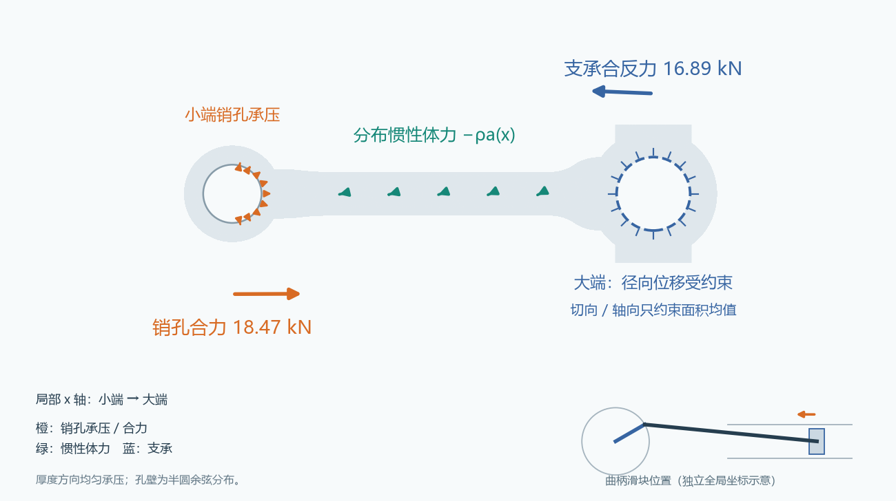
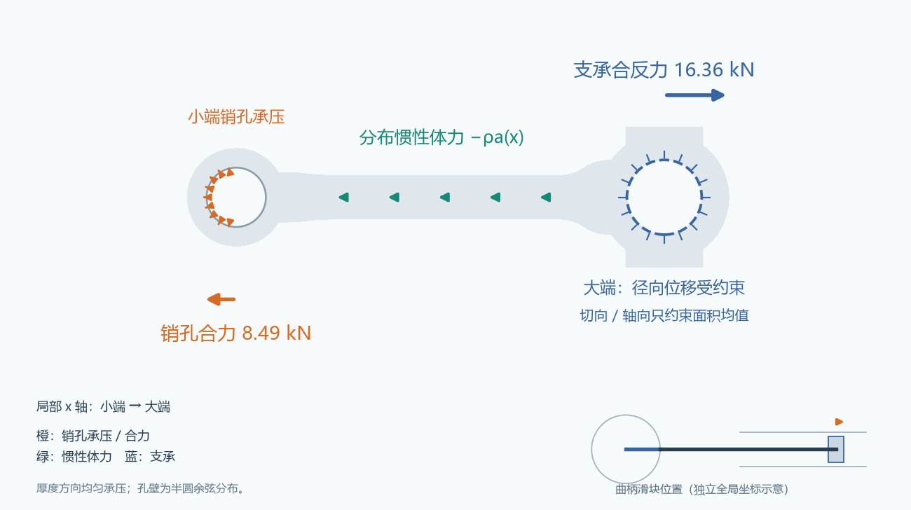
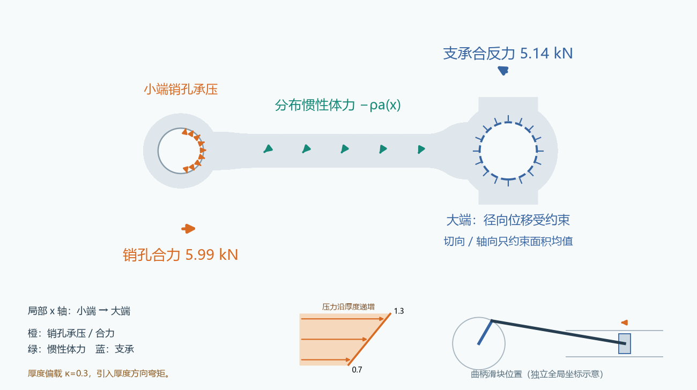
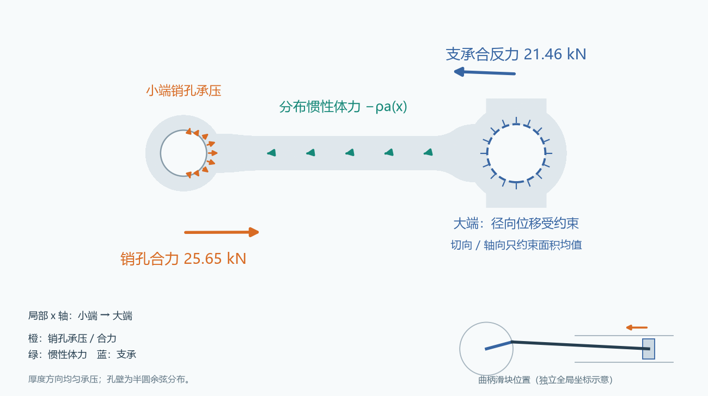
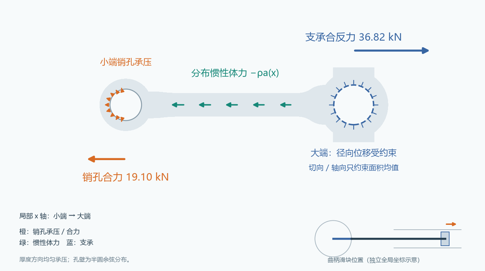
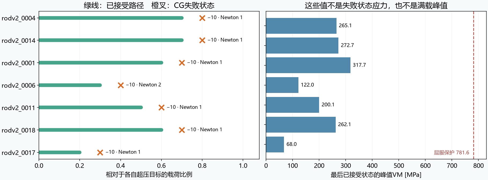
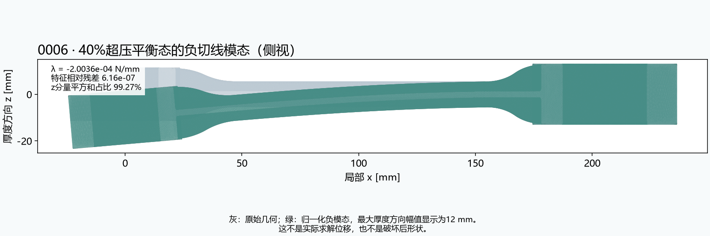

01
验收 / 总结 / 介绍
小批量试跑已经完成。通过质量门槛的细网格结果可进入后续数据准备，未通过的结果均保持隔离。
小批量试跑已经完成。通过质量门槛的细网格结果可进入后续数据准备，未通过的结果均保持隔离。
超压7例均报告CG算子非正定；新增0006同网格诊断确认了厚度方向负切线模态，支持该参考平衡分支出现弯曲失稳。其余6例不外推为已证实屈曲。
以下统一使用R04的0006真实细网格外形及其实际载荷参数。箭头用于解释受力，不是应力云图或变形结果。
曲柄 30° · 净气压 4 MPa · 3,000 rpm · κ=0

燃气推力与惯性共同形成压缩；销孔合力主要指向大端。
销孔 F=(+18.47, +0.078) kN
惯性体力合力 B=(-1.59, -0.78) kN
曲柄 360° · 净气压 0 MPa · 6,000 rpm · κ=0

气体净压力为零；上止点活塞惯性把小端向外拉，连杆自身仍有分布惯性体力。
销孔 F=(-8.49, +0.000) kN
惯性体力合力 B=(-7.87, +0.00) kN
曲柄 60° · 净气压 1.5 MPa · 4,500 rpm · κ=0.3

燃气、横向惯性与厚度偏载共同作用。κ=0.3带来压力厚度梯度，不能仅用一根轴向箭头代表。
销孔 F=(+5.99, +0.176) kN
惯性体力合力 B=(-1.51, -2.71) kN
曲柄 15° · 净气压 6 MPa · 4,500 rpm · κ=0

6 MPa是活塞侧净气压，不是孔壁压力；4500 rpm、15°曲柄位置也同时改变了惯性和受力方向。
销孔 F=(+25.65, +0.102) kN
惯性体力合力 B=(-4.21, -0.94) kN
曲柄 360° · 净气压 0 MPa · 9,000 rpm · κ=0

同为上止点、零净气压；转速由6000升至9000 rpm，惯性项按转速平方增至2.25倍。
销孔 F=(-19.10, +0.000) kN
惯性体力合力 B=(-17.71, +0.00) kN
示意图采用局部坐标：小端→大端为+x。橙色孔壁箭头共用压力缩放；惯性体力箭头共用加速度缩放，两者不能直接比较长度。蓝色合反力由R=−F−B求得。曲柄滑块小图采用独立的发动机全局坐标。示例中的R04组合弯曲为1.5 MPa，与R05的2.5 MPa设置不同。
七例都报 KSP_DIVERGED_INDEFINITE_MAT（−10），即CG检测到算子不满足所需的定性条件；不是迭代次数耗尽，也不是七例都触发了屈服保护。

相对额定爆发工况，净气压4→6 MPa，转速3000→4500 rpm，曲柄30°→15°同时变化。0006的销孔合力约18.47→25.65 kN，惯性体力合力约1.77→4.31 kN。转速平方效应和姿态变化共同改变轴向压缩、横向力及惯性弯矩。
6 MPa先作用于80 mm活塞，气体推力约30.16 kN；加入活塞惯性和坐标转换后才得到销孔合力。孔壁余弦压力系数为51.71 MPa，不能把整根连杆表面涂成6 MPa。
有限变形Newton每一步求解当前切线刚度。压缩预应力会改变几何刚度，确有可能接近失稳；数值缩放、近零模和增广/预条件处理也可能使CG检测到负曲率。
代码里声明SPD只是算法标志，不能把实际算子变成正定。当前方法采用K+γCᵀC的低秩增广和GAMG，再用两个约束的Schur补修正；即便约束平衡方程可解，也不保证此迭代路径稳健。
失败发生在各自目标载荷的30%–80%，不是同一个固定截止步。最后接受状态VM为67.98–317.74 MPa，远低于781.6 MPa门槛；变形Jacobian仍为正。因此已保存路径未显示屈服或单元翻转。
这七个细网格均通过SICN≥0.05门槛，不能把R05某些极低SICN网格的假设直接套用过来。七例的两约束Schur条件数接近1，也不支持把它们简单归因于两个均值约束线性相关。失败状态的应力未被接受，不能把“最后接受值”当成其最终峰值。
独立对照已完成：0006保持原细网格、原载荷和原本构，用CPU对称不定直接分解通过了原CG失败的40%载荷；自由相对残差 1.032e-07，峰值VM 162.66 MPa。在该已平衡状态重新装配切线，带两个约束的增广矩阵惯性为(3, 0, 666851)（负、零、正）；其中两个负方向由两个拉格朗日乘子约束引入，可容许位移空间检测到1个负方向。这表明该参考平衡分支出现了负切线方向；CG拒绝此类系统有数学依据。直接解可继续求平衡，却不能证明平衡稳定。不能把这一个案例推广为七例都已证明屈曲。进一步的约束切线特征计算得到负值 -2.003598e-04 N/mm，特征相对残差 6.16e-07，原生节点模态的z分量平方和占比99.27%，形状以厚度方向弯曲为主。30%已平衡状态的切线没有额外负方向，40%已有一个，说明此参考分支在两者之间失去局部稳定性。该特征值依赖自由度缩放，不是欧拉临界载荷。本对照只到40%目标，不是满载解，也不改变原R04的0/7超压接受记录。
对其余六例仍需同样的逐例验证。减小载荷步、换Krylov方法或直接分解可用于区分数值问题；如果真有负切线方向，则需要稳定性/分支跟踪分析，单纯“算到满载”不证明结构稳定。

| 几何 | 最后接受→失败载荷 | 失败Newton迭代 | KSP迭代 | 最后接受VM/MPa | 最后接受min J | 失败线性残差/绝对目标 |
|---|---|---|---|---|---|---|
| rodv2_0004 | 70% → 80% | 1 | 399 | 265.1 | 0.998416 | 23825× |
| rodv2_0014 | 70% → 80% | 1 | 354 | 272.7 | 0.998393 | 16180× |
| rodv2_0001 | 60% → 70% | 1 | 513 | 317.7 | 0.998147 | 7349× |
| rodv2_0006 | 30% → 40% | 2 | 220 | 122.0 | 0.999277 | 3098× |
| rodv2_0011 | 50% → 60% | 1 | 412 | 200.1 | 0.998817 | 42965× |
| rodv2_0018 | 60% → 70% | 1 | 436 | 262.1 | 0.998052 | 133301× |
| rodv2_0017 | 20% → 30% | 1 | 593 | 68.0 | 0.999616 | 16215× |
失败位置来自status.json；已接受应力/J来自accepted_history.json；线性错误来自failure.json。线性残差与Newton自由相对残差定义不同，不混为一个误差。图中未外推满载应力。
直接诊断在独立目录中保留，原7例超压失败记录未覆盖、原35例质控计数未修改。若直接解可继续，仍须在平衡态检验可容许切线；增广约束矩阵本身天然含拉格朗日乘子引入的负方向，不能将其当成屈曲模态。
这是不同转角的准静态工况快照，不是发动机完整循环、接触分离或疲劳寿命分析。
固定20个几何；正式求解只使用通过质量门槛的细网格。
建议先试跑 20–50 个几何
确认几何、mesh、解和样本编号一一对应，记录失败原因
35例全部得到终态：22例接受（21例新算、1例复用），12例PETSc CUDA迭代不收敛，1例触发屈服范围保护。仅7个合格细网格进入求解；13个隔离网格从未求解。失败不重跑，不使用CalculiX。
正在读取记录…